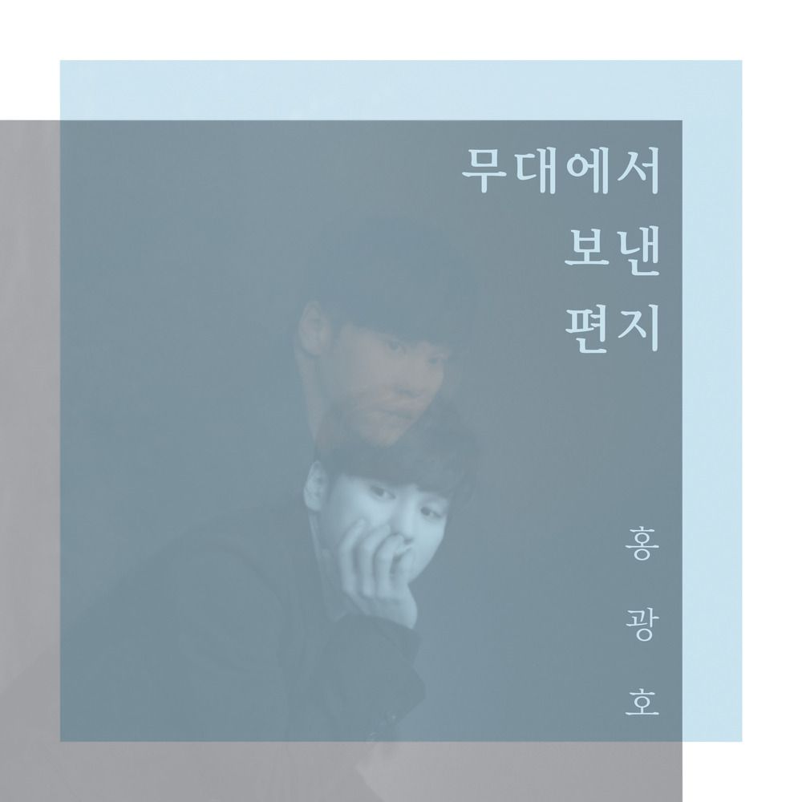

안녕하세요, 라보엠입니다.
오늘은 뮤지컬 ‘빨래’의 대표 넘버이자, 홍광호의 감미로운 목소리로 많은 이들의 마음을 사로잡은 ‘참 예뻐요’를 소개하겠습니다. 이 곡은 몽골에서 온 남자 주인공 솔롱고가 한국 여성 나영을 향해 느끼는 첫사랑의 설렘과 애틋함을 담아낸 노래로, 뮤지컬 팬뿐만 아니라 많은 음악 애호가들에게도 꾸준히 사랑받고 있습니다.
뮤지컬 ‘빨래’와 ‘참 예뻐요’
‘빨래’는 서울 달동네를 배경으로, 고단한 일상을 살아가는 평범한 이들의 삶과 사랑, 그리고 희망을 그리는 창작 뮤지컬입니다. 그중 ‘참 예뻐요’는 극 중 솔롱고가 나영을 바라보며 느끼는 순수한 마음을 담아, 관객들에게 깊은 인상을 남기는 넘버입니다.
특히 이 장면에서는 무대 위 다른 등장인물들이 모두 멈춰 있고, 솔롱고만 홀로 노래를 부르며 시간조차 멈춘 듯한 연출이 이어집니다. 이 몽환적인 분위기 속에서 홍광호의 목소리는 더욱 빛을 발하며, 관객의 마음을 촉촉하게 적십니다.
놀면뭐하니 - 정문성의 노래 2020. 04. 11
가사와 메시지 – 짧게 웃고 길게 우는 사랑의 진심
참예뻐요 내 맘 가져간 사람
참예뻐요 내 맘 가져간 사람
가을밤 잠 못드는 사랑 준 사람
짧게 웃고 길게 우는 사랑 준 사람
꼭 한번만 내게 말을 걸어 준다면
꼭 한번만 웃는 얼굴 보여 준다면
꼭 한번만 내민 손을 잡아준다면
밤 하늘을 날 수도 있을 텐데
참예뻐요 내 맘 가져간 사람
참예뻐요 내 맘 가져간 사람
가을밤 잠 못드는 사랑 준 사람
짧게 웃고 길게 우는 사랑 준 사람
꼭 한번만 내게 말을 걸어 준다면
꼭 한번만 웃는 얼굴 보여 준다면
꼭 한번만 내민 손을 잡아준다면
밤 하늘을 날 수도 있을 텐데
들리나요 내 맘 외치는 소리
보이나요 내 두눈에 흐르는 눈물
느끼나요 타버릴 것 같은 내 심장
밤 하늘을 함께 날고 싶은 사람
참 예뻐요 이런 내 맘 아나요
참예뻐요 나와는 다른 사람
여름밤 잠 못드는 사랑 준 사람
짧게 웃고 길게 우는 사랑 준 사람
나와 닮은 사람
‘참 예뻐요’의 가사는 사랑을 막 시작한 이의 설렘과 간절함, 그리고 말로 다 하지 못하는 애틋함이 고스란히 담겨 있습니다.
“참 예뻐요 내 맘 가져간 사람
가을밤 잠 못 드는 사랑 준 사람
짧게 웃고 길게 우는 사랑 준 사람”
이처럼, 사랑의 기쁨과 슬픔이 교차하는 감정선을 담백하게 표현합니다. 솔롱고는 작은 바람조차 간절하게 느끼는 순수한 마음을 노래합니다. 후반부에서는 이루어질 듯 이루어지지 않는 사랑의 안타까움과 진심이 절절하게 전해집니다.
홍광호의 목소리가 주는 위로와 감동
홍광호는 대극장과 소극장을 넘나들며 ‘지킬 앤 하이드’, ‘맨 오브 라만차’, ‘노트르담 드 파리’ 등에서 스타로 자리매김한 뮤지컬 배우입니다. 뮤지컬 빨래의 ‘참 예뻐요’에서는 그의 부드럽고 풍성한 음색, 그리고 섬세한 감정 표현이 돋보입니다. 특히 라이브 무대에서 들려주는 ‘참 예뻐요’는 관객들에게 꿈결 같은 위로와 감동을 선사합니다. 홍광호의 목소리는 마치 삶의 묵은 때를 빨래하듯, 듣는 이의 마음을 맑게 씻어주는 힘이 있습니다.
계절과 어울리는 노래, 그리고 뮤지컬의 힘
‘참 예뻐요’는 특히 가을밤, 사랑에 빠진 이들의 마음을 대변하는 곡으로 자주 언급됩니다.
짧게 웃고 길게 우는 사랑, 그리고 그리움과 설렘이 뒤섞인 감정이 계절의 정취와 잘 어울립니다.
뮤지컬 ‘빨래’는 매년 겨울, 대학로 무대에서 관객과 만나며, ‘참 예뻐요’는 그중에서도 가장 큰 박수와 공감을 받는 넘버입니다.
현장에서 직접 듣는 감동은 음원으로도 다 담기지 않을 만큼 크다고 하니, 기회가 된다면 꼭 뮤지컬 무대를 경험해보시길 추천합니다.
맺음말
홍광호의 ‘참 예뻐요’는 첫사랑의 설렘과 순수함, 그리고 이루어질 듯 닿지 않는 애틋함을 아름답게 담아낸 곡입니다.
뮤지컬 ‘빨래’의 서정적인 분위기와 홍광호의 따뜻한 목소리가 어우러져, 듣는 이에게 잔잔한 위로와 여운을 남깁니다.
오늘 하루, ‘참 예뻐요’를 들으며 사랑의 소중함과 순수함을 다시 한 번 느껴보시길 바랍니다.
여러분의 마음에도 이 곡이 작은 위로와 설렘이 되길 바라며, 뮤지컬 ‘빨래’와 함께하는 따뜻한 추억을 만들어보세요.
